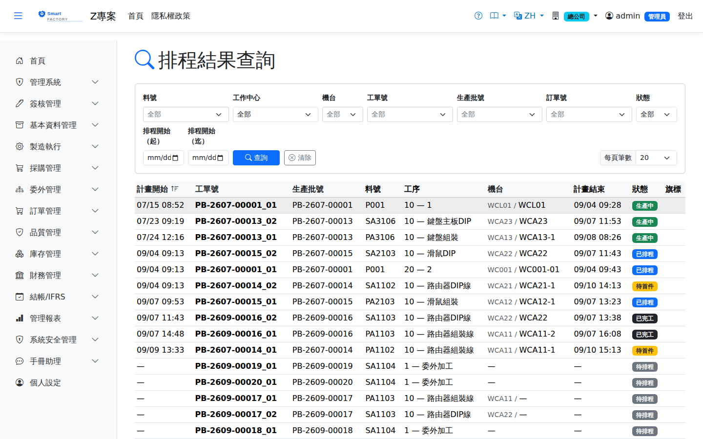

排程查詢Schedule Query
路由：/ScheduleQuery | 排程結果與機台負荷查詢Route: /ScheduleQuery | Schedule and machine load enquiry
唯讀查詢排程結果：依機台、工單、日期區間檢視派工時段、等候佇列與逾載情形，供產線主管與業務答交參考。A read-only view of the schedule: dispatch time slots, queues and overload by machine, work order and date range, for line supervisors and for quoting delivery dates.

排程查詢畫面截圖（示意，實際欄位/資料依權限與查詢條件而異）Schedule enquiry screenshot (illustrative; actual fields and data vary by permission and query criteria)
查詢Search
1
查詢列輸入條件後點「查詢」；欄位標題可點擊排序，清單下方有分頁導航。Enter your criteria on the query bar and click "Search"; column headers can be clicked to sort, and the paging controls sit below the list.
欄位說明Field reference
查詢條件Query criteria
| 條件Condition | 說明Guide |
|---|---|
| 料號 / 工單號 / 生產批號 / 訂單號Item / Work order No / Batch No / Order No | 各自縮小查詢範圍，可從任一角度回溯排程結果each narrows the query, so the schedule can be traced from any angle |
| 工作中心 / 機台Work center / Machine | 限定產能資源Limits the capacity resource |
| 狀態Status | 依排程作業狀態篩選Filters by scheduled operation status |
| 排程開始（起 / 迄）Scheduled start (from / to) | 依計畫開始時間的區間篩選Filters by planned start time range |
清單欄位List columns
| 欄位Field | 說明Guide |
|---|---|
| 計畫開始 / 計畫結束Planned start / Planned end | 排程算出的作業起訖時間（顯示為使用者時區的當地時間）Start and end times of the operation from the scheduler (shown in your local time zone) |
| 工單號 / 生產批號 / 料號Work order No / Batch No / Item | 作業所屬的工單、生產批與生產品號Work order, production batch and item the operation belongs to |
| 工序Operation | 途程中的工序序號與名稱Sequence and name of the operation in the routing |
| 機台Machine | 指派執行的機台Machine assigned to do the work |
| 狀態Status | 排程作業目前的執行狀態Current status of the scheduled operation |
| 旗標Flags | 風險標示：模具衝突／延遲／待料，用於快速篩出需要處理的作業Risk markers: tooling conflict, late, waiting for material — a quick way to pick out the operations that need attention |